Farbe gestaltenlernen
Wie entsteht Farbe, wie mischt und beschreibt man sie, und wie setzt man sie gezielt ein? Von Licht und Wahrnehmung über Farbmodelle, Kontraste und Harmonien bis zu Farbe im Interface und Barrierefreiheit. Mit sechs interaktiven Übungen, in denen Sie mischen, messen und eigene Paletten testen.
Theorie & Grundlagen
Kapitel 01–10Übungen
Mischen · Messen · GestaltenWissen
Test · Literatur · RegisterWarum Farbe gestalten?
Farbe ist meist das Erste, was wir an einem Plakat, einer App oder einer Verpackung wahrnehmen, noch bevor wir Text lesen oder Formen deuten. Sie ordnet, lenkt den Blick, transportiert Stimmung und trägt Bedeutung. Wer mit Farbe gestaltet, sollte wissen, wie sie entsteht, wie man sie präzise beschreibt und wie sie wirkt.
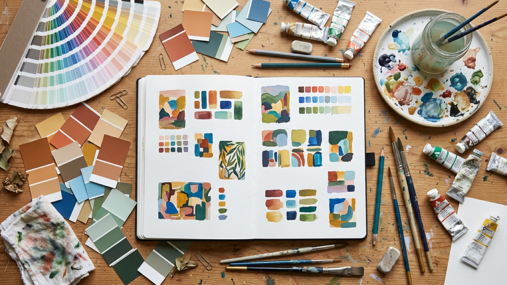
Vier Aufgaben von Farbe
Ordnen
Farbe gruppiert Zusammengehöriges und trennt Unterschiedliches: Linien im Verkehrsnetz, Kategorien in einem Diagramm, Bereiche einer Website.
Hervorheben
Eine Akzentfarbe zieht den Blick auf das Wichtigste, etwa den Button „Jetzt kaufen“ oder eine Warnung. Das funktioniert nur, wenn sie sparsam eingesetzt wird.
Wirken
Farben lösen Assoziationen und Stimmungen aus: ruhig oder laut, kühl oder warm, edel oder günstig. Diese Wirkung ist teils erlernt und kulturell geprägt.
Wiedererkennen
Hausfarben machen Marken unterscheidbar. Viele Unternehmen sind an ihrer Farbe erkennbar, lange bevor man das Logo lesen kann.
Lernziele
Nach Bearbeitung des Moduls können Sie …
- erklären, wie Farbe physikalisch und physiologisch entsteht,
- additive und subtraktive Farbmischung unterscheiden und anwenden,
- Farben in RGB, HEX, HSL und CMYK lesen, notieren und umrechnen,
- die wichtigsten Farbordnungen von Goethe bis NCS einordnen,
- die sieben Farbkontraste nach Itten erkennen und gezielt einsetzen,
- harmonische Farbklänge am Farbkreis bilden,
- Farbwirkung und kulturelle Bedeutung von Farben reflektieren,
- eine Farbpalette für ein Interface mit Hell- und Dunkelmodus aufbauen,
- Kontraste nach WCAG prüfen und Gestaltungen für Menschen mit Farbsehschwäche robust machen.
So arbeiten Sie mit dem Modul
Die Kapitel 01–10 bauen aufeinander auf. Viele enthalten kleine Demos zum Ausprobieren.
Sechs Übungen vom Farbmischer bis zur eigenen Palette. Jede endet mit „Als erledigt markieren“.
Der Wissenstest mit 15 Fragen fasst das Modul zusammen. Ihr Fortschritt bleibt in diesem Browser gespeichert.
Hinweis zu Farben am Bildschirm: Jeder Monitor stellt Farben etwas anders dar. Die Farbflächen in diesem Modul sind aus exakten Werten berechnet, ihr Eindruck hängt aber von Bildschirm, Helligkeit und Umgebungslicht ab. Genau darum geht es auch in Kapitel 04.
Licht und Wahrnehmung
Farbe ist keine Eigenschaft der Dinge, sondern eine Empfindung. Sie entsteht, wenn Licht auf unser Auge trifft und das Gehirn die Signale deutet. Drei Faktoren wirken zusammen: die Lichtquelle, die Oberfläche, die Licht verschluckt oder zurückwirft, und das wahrnehmende Auge.
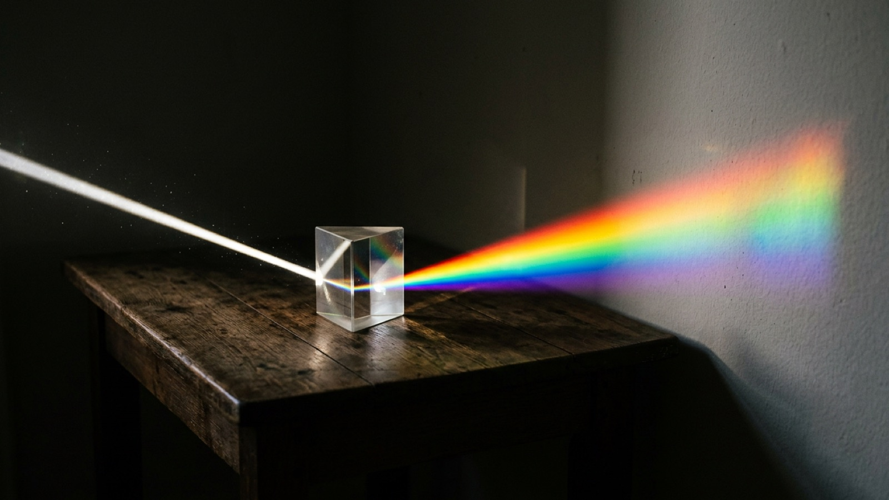
Das sichtbare Spektrum
Licht ist elektromagnetische Strahlung. Sichtbar ist für uns nur ein schmaler Bereich mit Wellenlängen von etwa 380 bis 780 Nanometern. Kurze Wellen empfinden wir als Violett und Blau, lange als Orange und Rot. Isaac Newton zeigte 1666 mit einem Prisma, dass weißes Licht alle diese Farben enthält, und beschrieb es 1704 in seiner Schrift Opticks.
Körperfarbe: Was eine Oberfläche mit Licht macht
Eine Tomate „ist“ nicht rot. Ihre Oberfläche verschluckt (absorbiert) den größten Teil des kurz- und mittelwelligen Lichts und wirft vor allem langwelliges Licht zurück (Remission). Nur dieses zurückgeworfene Licht erreicht unser Auge. Weiße Flächen werfen fast alles Licht zurück, schwarze verschlucken fast alles.
Lichtfarbe
Farbe, die von einer Lichtquelle ausgeht: Bildschirm, LED, Sonne. Grundlage der additiven Mischung.
Körperfarbe
Farbe, die durch Absorption und Remission an einer Oberfläche entsteht: Papier, Lack, Stoff. Grundlage der subtraktiven Mischung.
Farbreiz
Das Licht, das tatsächlich ins Auge fällt. Er hängt von Lichtquelle und Oberfläche gleichermaßen ab.
Das Auge: Zapfen und Stäbchen
Auf der Netzhaut liegen zwei Arten von Lichtsinneszellen. Rund 120 Millionen Stäbchen sind sehr lichtempfindlich, unterscheiden aber keine Farben. Sie übernehmen das Sehen in der Dämmerung. Etwa 6 Millionen Zapfen ermöglichen das Farbsehen bei Tageslicht. Es gibt drei Zapfentypen, die jeweils auf einen anderen Wellenlängenbereich am stärksten ansprechen:
| Zapfentyp | Empfindlichkeit am höchsten bei | vereinfacht |
|---|---|---|
| S-Zapfen (short) | ca. 420 nm | Blau |
| M-Zapfen (medium) | ca. 530 nm | Grün |
| L-Zapfen (long) | ca. 560 nm | Gelbgrün bis Rot |
Aus dem Verhältnis der drei Signale errechnet das Gehirn einen Farbton. Diese Dreifarbentheorie (Young und Helmholtz, 19. Jh.) erklärt, warum Bildschirme mit nur drei Lichtfarben Rot, Grün und Blau fast alle Farben darstellen können. Die Gegenfarbentheorie von Ewald Hering ergänzt: In den Nervenbahnen werden die Signale zu Gegensatzpaaren verrechnet, Rot gegen Grün, Gelb gegen Blau und Hell gegen Dunkel. Das erklärt Nachbilder und Simultankontrast.
Ausprobieren: das Nachbild
Schauen Sie etwa 20 Sekunden auf den Punkt in der Mitte der farbigen Fläche. Klicken Sie dann auf „Weiß zeigen“ und schauen Sie weiter auf den Punkt. Die ermüdeten Zapfen erzeugen kurz die Gegenfarbe.
Fläche: Rot (#E0301E). Erwartetes Nachbild: Blaugrün.
Metamerie und Farbkonstanz
Metamerie
Zwei Farbmuster sehen unter einer Lichtart gleich aus, unter einer anderen verschieden. Ihr Licht ist physikalisch unterschiedlich zusammengesetzt, löst aber unter der ersten Beleuchtung dieselben Zapfensignale aus. Darum prüft man Druckmuster unter Normlicht (D50).
Farbkonstanz
Ein weißes Blatt wirkt im gelblichen Lampenlicht und im bläulichen Tageslicht weiß, obwohl unterschiedliches Licht ins Auge fällt. Das Gehirn gleicht die Lichtfarbe aus. Kameras brauchen dafür einen Weißabgleich.
Farbsehschwäche: Rund 8 % der Männer und 0,5 % der Frauen in Europa sehen Farben anders, meist mit eingeschränkter Unterscheidung von Rot und Grün. Mehr dazu in Kapitel 10 und in Übung 5.
Farbmischung
Es gibt zwei grundlegend verschiedene Arten, Farben zu mischen. Am Bildschirm addieren wir Licht, im Druck und beim Malen nehmen Pigmente Licht weg. Wer für Bildschirm und Papier gestaltet, muss beide Systeme kennen.
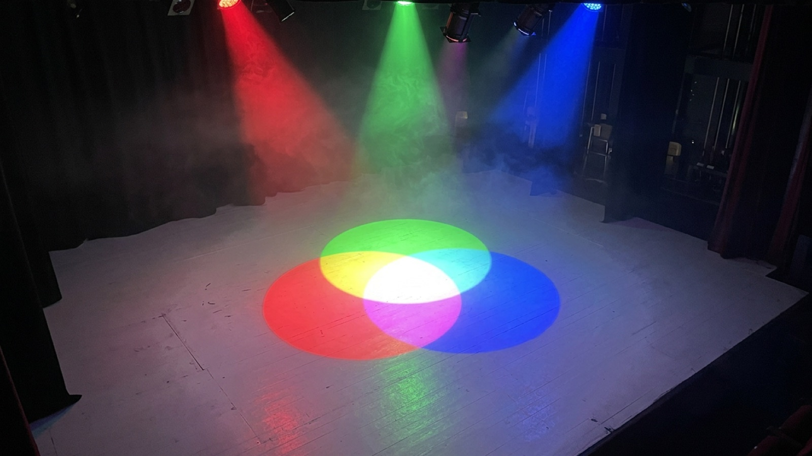
Additive Mischung: Licht plus Licht
Bei der additiven Mischung überlagern sich Lichtfarben. Jede weitere Farbe fügt Licht hinzu, das Ergebnis wird heller. Die Grundfarben sind Rot, Grün und Blau (RGB). Rot und Grün ergeben Gelb, alle drei zusammen ergeben Weiß. So arbeiten Monitore, Smartphones, Beamer und LED-Wände.
Subtraktive Mischung: Pigment nimmt Licht weg
Bei der subtraktiven Mischung filtern Farbschichten Teile des Lichts heraus. Jede weitere Farbe nimmt Licht weg, das Ergebnis wird dunkler. Die Grundfarben des Drucks sind Cyan, Magenta und Gelb (CMY). Cyan und Gelb ergeben Grün, alle drei zusammen theoretisch Schwarz. In der Praxis entsteht ein schmutziges Dunkelbraun, darum druckt man zusätzlich Schwarz (K, von Key).
Vergleich
| Additiv | Subtraktiv | |
|---|---|---|
| Medium | Licht (Bildschirm, Projektion) | Pigment, Druckfarbe, Filter |
| Grundfarben | Rot, Grün, Blau | Cyan, Magenta, Gelb (+ Schwarz) |
| Ausgangspunkt | Schwarz (kein Licht) | Weiß (unbedrucktes Papier) |
| Alle Grundfarben | ergeben Weiß | ergeben (fast) Schwarz |
| Mischen macht | heller | dunkler |
| Farbmodell | RGB, HEX, HSL | CMYK |
Beide Systeme sind über Kreuz verbunden: Die Mischfarben der einen Seite sind die Grundfarben der anderen. Rot + Grün ergibt additiv Gelb, Magenta + Gelb ergibt subtraktiv Rot.
Weitere Mischarten
Optische Mischung
Kleine Farbpunkte verschmelzen ab einem gewissen Abstand im Auge. So arbeiten Rasterdruck, Pixel und die Malerei des Pointillismus (Georges Seurat).
Ittens Malfarbenkreis
In der Malerei lehrt man traditionell Rot, Gelb und Blau als Grundfarben. Für Pigmente ist das eine brauchbare Faustregel, physikalisch präziser sind Cyan, Magenta und Gelb.
Üben: In Übung 1 mischen Sie Zielfarben mit RGB- und CMY-Reglern nach.
Farbmodelle und Farbräume
Um Farben exakt weiterzugeben, brauchen wir Zahlen. Ein Farbmodell legt fest, wie eine Farbe beschrieben wird, zum Beispiel als Anteile von Rot, Grün und Blau. Ein Farbraum legt zusätzlich fest, welche konkreten Farben diese Zahlen bedeuten.
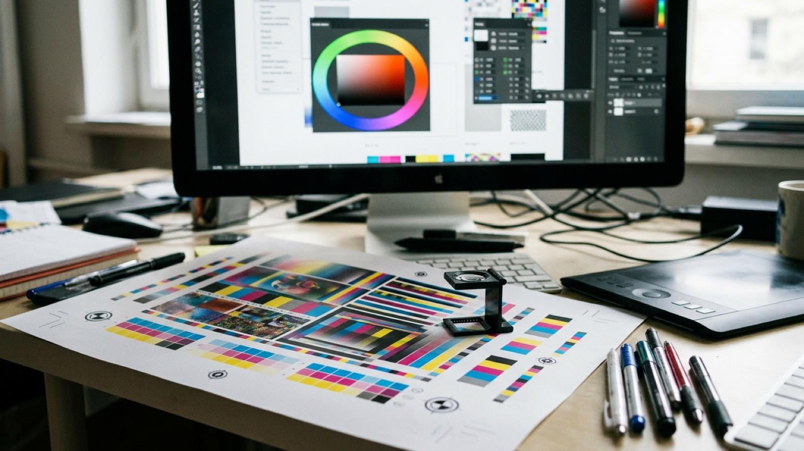
RGB und HEX
Im RGB-Modell hat jeder Kanal einen Wert von 0 bis 255 (8 Bit). rgb(255, 0, 0) ist reines Rot, rgb(0, 0, 0) Schwarz, rgb(255, 255, 255) Weiß. Das ergibt 256³, also rund 16,7 Millionen Kombinationen.
Die HEX-Schreibweise notiert dieselben drei Werte hexadezimal, je zwei Ziffern von 00 bis FF. #FF8000 bedeutet Rot FF (255), Grün 80 (128), Blau 00 (0), also Orange. Sind beide Ziffern jedes Paares gleich, darf man kürzen: #FFAA00 wird zu #FA0.
HSL: Farbton, Sättigung, Helligkeit
RGB ist für Maschinen gedacht. Menschen beschreiben Farben eher so: Welcher Farbton? Wie kräftig? Wie hell? Genau das bildet HSL ab:
H · Hue
Farbton als Winkel auf dem Farbkreis, 0° bis 360°. 0° Rot, 120° Grün, 240° Blau.
S · Saturation
Sättigung von 0 % (Grau) bis 100 % (volle Buntheit).
L · Lightness
Helligkeit von 0 % (Schwarz) über 50 % (reine Farbe) bis 100 % (Weiß).
CMYK
CMYK beschreibt Druckfarben als Flächendeckung von 0 bis 100 % je Farbe: C 0 · M 60 · Y 100 · K 0 ist ein kräftiges Orange. Weil Druckfarben Licht wegnehmen, kann CMYK weniger leuchtende Farben darstellen als ein Bildschirm. Ein knalliges RGB-Grün oder -Blau wirkt gedruckt oft stumpfer.
Lab und OKLCH: Farben, wie wir sie sehen
Die CIE (Internationale Beleuchtungskommission) definierte 1931 einen Farbraum, der alle für Menschen sichtbaren Farben umfasst. Daraus entstand 1976 CIELAB mit L* für Helligkeit, a* für die Achse Grün–Rot und b* für Blau–Gelb. Lab ist wahrnehmungsnah: Gleiche Zahlenabstände sollen ungefähr gleich große empfundene Unterschiede bedeuten. Der Farbabstand ΔE (Delta E) misst, wie verschieden zwei Farben wirken. Ab etwa ΔE 2 bemerken geübte Betrachter einen Unterschied.
Im Web gewinnt OKLCH an Bedeutung (Helligkeit, Chroma, Farbton). Es funktioniert wie HSL, aber zwei Farben mit gleichem L wirken dort tatsächlich gleich hell. In HSL ist Gelb bei L 50 % viel heller als Blau bei L 50 %. Probieren Sie es oben im Farbwähler aus.
Farbraum, Gamut und Farbmanagement
Gamut
Der Umfang an Farben, den ein Gerät oder Verfahren darstellen kann. Ein Monitor hat einen anderen Gamut als eine Zeitungsdruckmaschine.
sRGB und Display P3
sRGB (1996) ist der Standardfarbraum des Webs. Display P3 ist größer und bei modernen Smartphones und Laptops verbreitet: Rot und Grün können dort kräftiger leuchten.
ICC-Profil
Beschreibt den Farbraum eines Geräts oder Druckverfahrens, z. B. PSO Coated v3 für Bilderdruckpapier. Farbmanagement rechnet Farben von einem Profil ins andere um.
Softproof
Bildschirmsimulation, wie eine Datei im Druck aussehen wird. Nur auf einem kalibrierten Monitor aussagekräftig.
| Modell | Schreibweise (Beispiel Orange) | Typischer Einsatz |
|---|---|---|
| HEX | #F28C28 | Web, CSS, Styleguides |
| RGB | rgb(242 140 40) | Bildschirm, Bildbearbeitung |
| HSL | hsl(30 89% 55%) | CSS, Farbvarianten ableiten |
| CMYK | C 0 · M 50 · Y 90 · K 0 | Offsetdruck, Digitaldruck |
| Lab | L 68 · a 34 · b 66 | Farbmessung, Umrechnung, Qualitätskontrolle |
| OKLCH | oklch(0.72 0.16 58) | modernes CSS, gleichmäßige Paletten |
CMYK- und Lab-Werte sind gerundete Näherungen, die genauen Werte hängen vom verwendeten Profil ab.
Üben: In Übung 2 lernen Sie, HEX- und HSL-Werte zu lesen, ohne die Farbe zu sehen.
Farbordnungen
Seit Jahrhunderten versuchen Wissenschaftler und Künstler, die Vielfalt der Farben in eine Ordnung zu bringen: als Kreis, Dreieck, Kugel oder Körper. Jede Ordnung beantwortet eine andere Frage, und viele werden bis heute in Gestaltung, Industrie und Lehre genutzt.
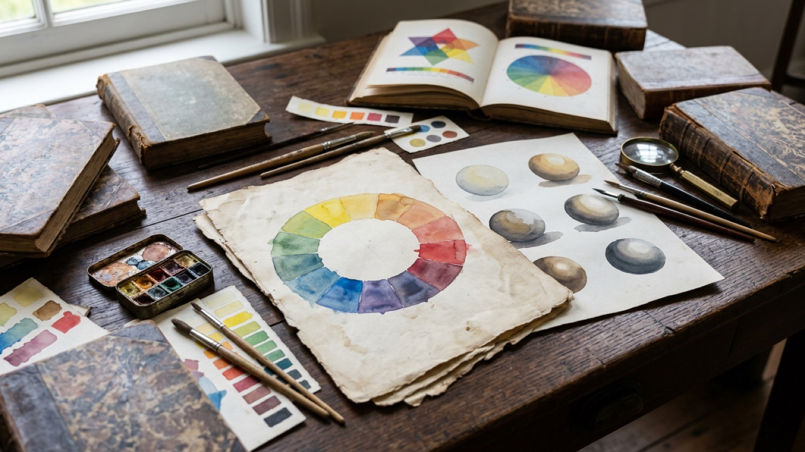
- 1704
Isaac Newton
Ordnet die Spektralfarben in einem Kreis an und verbindet so das rote mit dem violetten Ende des Spektrums. Grundlage aller späteren Farbkreise.
- 1810
Johann Wolfgang von Goethe
Seine Farbenlehre beschreibt Farbe als Erlebnis. Sein sechsteiliger Farbkreis und die Lehre von der „sinnlich-sittlichen Wirkung“ der Farben prägen bis heute das Nachdenken über Farbwirkung.
- 1810
Philipp Otto Runge
Der Maler entwirft mit der Farbenkugel das erste dreidimensionale Farbsystem: Der Äquator zeigt die reinen Farben, die Pole Weiß und Schwarz.
- 1905
Albert H. Munsell
Ordnet Farben nach Farbton (Hue), Helligkeit (Value) und Buntheit (Chroma) in gleichen Empfindungsschritten. Das Munsell-System wird noch heute etwa in Geologie und Medizin verwendet.
- 1927
RAL-Farben
Das deutsche RAL-Register normiert Farbtöne für Industrie und Behörden mit vierstelligen Nummern, etwa RAL 3020 Verkehrsrot.
- 1961
Johannes Itten
Der Bauhaus-Lehrer veröffentlicht Kunst der Farbe mit seinem zwölfteiligen Farbkreis und den sieben Farbkontrasten (Kapitel 06). Prägend für die Gestaltungslehre.
- 1963
Josef Albers · Pantone
Albers zeigt in Interaction of Color, wie stark Farben voneinander abhängen. Im selben Jahr führt Pantone sein Matching System für Sonderfarben ein.
- 1979
NCS · Harald Küppers
Das schwedische Natural Color System beschreibt Farben nach ihrer Ähnlichkeit mit sechs Elementarfarben. Küppers entwickelt ab den 1970er-Jahren eine Farbenlehre mit acht Grundfarben, die additive und subtraktive Mischung verbindet.
Ittens zwölfteiliger Farbkreis
Itten baut seinen Kreis aus den drei Grundfarben (Primärfarben) Gelb, Rot und Blau auf. Je zwei mischen sich zu den Sekundärfarben Orange, Violett und Grün. Aus Grund- und Sekundärfarbe entstehen sechs Tertiärfarben. Gegenüberliegende Farben sind Komplementärfarben.
Alle zwölf Farben des Kreises. Die Ziffern 1, 2 und 3 kennzeichnen Grund-, Sekundär- und Tertiärfarben.
Die Farbwerte sind digitale Annäherungen an Ittens Malfarben.
Farbsysteme in der Praxis
| System | Prinzip | Einsatz |
|---|---|---|
| Pantone (PMS) | Nummerierte Sonderfarben mit fester Rezeptur, z. B. Pantone 286 C | Logos, Verpackung, Corporate Design |
| HKS | Deutsches Sonderfarbensystem mit 88 Grundtönen | Druck im deutschsprachigen Raum |
| RAL | Register normierter Farbtöne (RAL Classic, RAL Design) | Lacke, Industrie, Architektur, Verkehr |
| NCS | Anteile Schwarz, Buntheit und Farbton, z. B. S 2050-Y90R | Architektur, Innenraum, Textil |
| Munsell | Hue, Value, Chroma in gleichen Empfindungsabständen | Wissenschaft, Bodenkunde, Lehre |
Die sieben Farbkontraste
Farben wirken nie allein, sondern immer im Verhältnis zu ihrer Umgebung. Johannes Itten beschrieb sieben Arten, wie Farben sich gegenseitig steigern oder abschwächen. Sie sind bis heute ein Werkzeugkasten, um Farbwirkungen zu analysieren und bewusst zu gestalten.
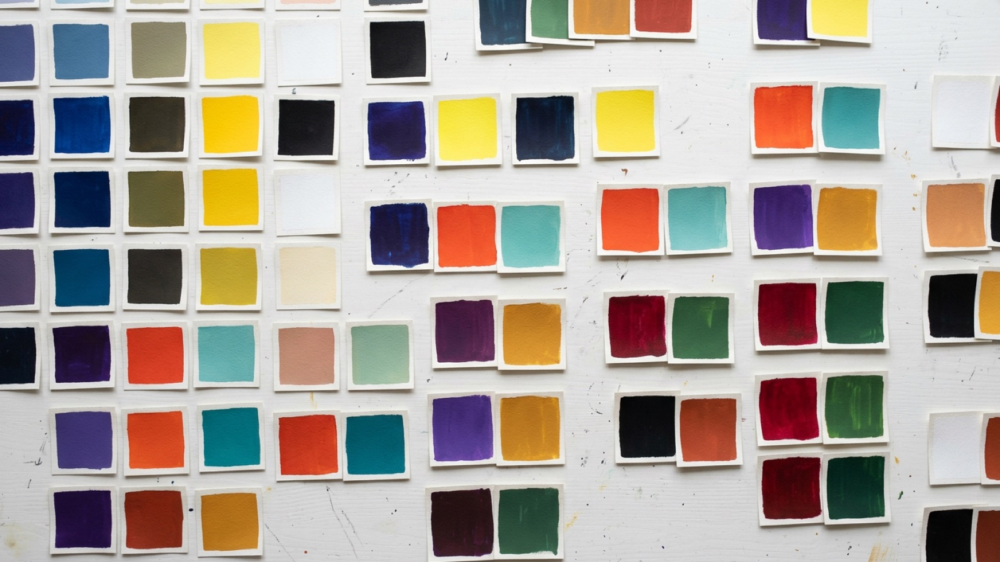
Wählen Sie einen Kontrast. Die Beispielfläche ist jeweils aus exakten Farbwerten gezeichnet.
Üben: In Übung 3 ordnen Sie Beispiele den Kontrasten zu und erleben den Simultankontrast selbst.
Farbharmonien
Ein Farbklang wirkt harmonisch, wenn seine Farben in einer erkennbaren Beziehung zueinander stehen. Der Farbkreis hilft, solche Beziehungen zu finden: über Nachbarschaft, Gegenüberstellung oder gleichmäßige Abstände. Harmonie ist dabei kein Naturgesetz, sondern ein Ausgangspunkt.
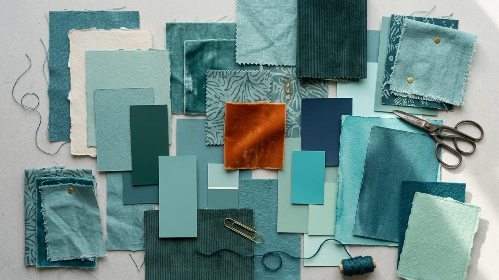
Die klassischen Farbklänge
Mehr als der Farbton
Der Farbkreis zeigt nur den Farbton. Ob eine Palette funktioniert, entscheiden genauso Helligkeit und Sättigung. Drei Faustregeln:
- Eine Farbe führt. Eine Hauptfarbe dominiert, die anderen begleiten. Gleich starke, gesättigte Farben konkurrieren.
- Helligkeit staffeln. Eine gute Palette funktioniert auch in Graustufen: Hell, Mittel und Dunkel müssen klar unterscheidbar bleiben.
- Sättigung dosieren. Gedämpfte Töne als Fläche, gesättigte als Akzent. Die 60-30-10-Regel in Kapitel 09 zeigt eine bewährte Verteilung.
„In visual perception a color is almost never seen as it really is – as it physically is.“Josef Albers, Interaction of Color (1963)
Üben: Mit dem Harmonie-Farbkreis in Übung 4 erzeugen Sie Farbklänge und prüfen sie an einem Plakatentwurf.
Farbwirkung und Kultur
Farben lösen Gefühle und Assoziationen aus. Manche Wirkungen sind körperlich begründet, etwa die Signalwirkung von Rot. Viele sind gelernt und hängen von Kultur, Epoche und Kontext ab. Gute Farbgestaltung kennt diese Bedeutungen und prüft sie für die jeweilige Zielgruppe.
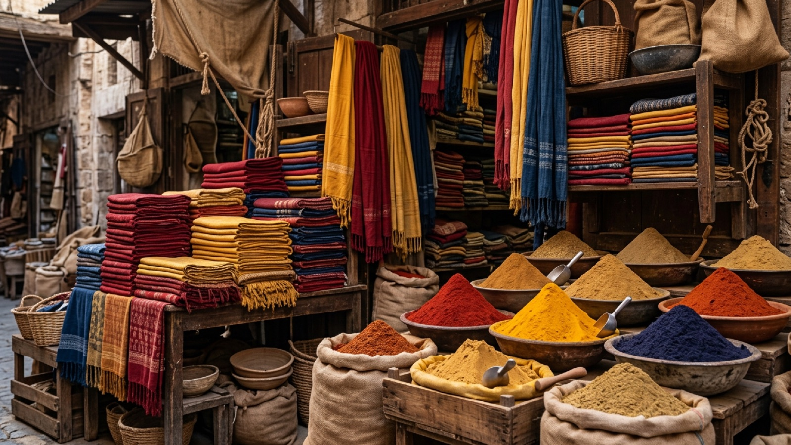
Warm und kalt, schwer und leicht
Temperatur
Rot, Orange und Gelb wirken warm und scheinen nach vorn zu treten. Blau, Blaugrün und Blauviolett wirken kühl und treten zurück. Das nutzt man für räumliche Tiefe.
Gewicht
Dunkle, gesättigte Farben wirken schwer, helle leicht. Eine dunkle Fläche oben im Format wirkt drückend, unten stabil.
Farben und ihre Bedeutungen
Eva Heller befragte für ihr Buch Wie Farben wirken rund 2.000 Menschen in Deutschland nach Lieblingsfarben und Assoziationen. Die folgende Übersicht fasst typische Bedeutungen im europäischen Kontext zusammen und nennt Gegenbeispiele aus anderen Kulturen.
Kontext entscheidet
Dieselbe Farbe kann je nach Umgebung Gegensätzliches bedeuten. Rot steht für Liebe, Gefahr, Sale oder Fehler. Erst Form, Text, Bild und Konvention machen die Bedeutung eindeutig. Fragen Sie bei jeder Farbentscheidung:
- Welche Bedeutung hat die Farbe in meiner Branche? Grün bei Banken, Bioprodukten und Ampeln meint jeweils etwas anderes.
- Für welche Kulturen gestalte ich? Weiß ist in Europa Hochzeitsfarbe, in Teilen Ostasiens traditionell Trauerfarbe.
- Welche Farben nutzt der Wettbewerb? Abgrenzung ist oft wichtiger als „die richtige“ Farbe.
Vorsicht mit Farbpsychologie-Listen: Viele populäre Aussagen wie „Blau steigert die Produktivität“ sind wissenschaftlich kaum belegt. Nutzen Sie solche Zuordnungen als Ausgangspunkt für Ideen, nicht als Beweis.
Farbe im Interface
In Websites und Apps hat Farbe vor allem eine Aufgabe: Orientierung. Sie zeigt, was klickbar ist, was gerade aktiv ist und ob etwas geklappt hat. Damit das über Hunderte Bildschirme hinweg konsistent bleibt, arbeitet man mit festen Rollen und benannten Farbwerten.
Die 60-30-10-Regel
Eine bewährte Faustregel aus der Innenarchitektur: etwa 60 % der Fläche in einer ruhigen Grundfarbe, 30 % in einer Sekundärfarbe und 10 % in einer Akzentfarbe. Im Interface ist die Grundfarbe meist ein helles oder dunkles Neutral, die Akzentfarbe markiert Aktionen.
Farbrollen statt Farbnamen
Professionelle Interfaces vergeben Farben nach ihrer Rolle, nicht nach ihrem Aussehen. Statt „Orange“ heißt es „Primärfarbe“, statt „Hellgrau“ „Fläche“. So lässt sich die Palette ändern, ohne jede Stelle einzeln anzupassen.
| Rolle | Aufgabe | Beispiel |
|---|---|---|
| Primär | Hauptaktionen, aktive Zustände, Markenfarbe | Button „Speichern“ |
| Sekundär | Ergänzende Aktionen, Auszeichnungen | Filter-Chip |
| Neutral | Hintergründe, Flächen, Linien, Text | Seitenhintergrund, Fließtext |
| Erfolg | Bestätigung | „Gespeichert“ |
| Warnung | Aufmerksamkeit, reversible Probleme | „Akku schwach“ |
| Fehler | Fehler, destruktive Aktionen | „Passwort falsch“, „Löschen“ |
Design Tokens
Design Tokens sind benannte Variablen für Gestaltungsentscheidungen. In CSS schreibt man sie als Custom Properties. Ein zweistufiges System trennt Rohwerte von Rollen:
/* Stufe 1: Basispalette */
--blue-700: #1E3A5F;
--orange-600: #C2410C;
--gray-50: #F9FAFB;
/* Stufe 2: Rollen, verweisen auf die Basis */
--color-primary: var(--orange-600);
--color-surface: var(--gray-50);
--color-text: var(--blue-700);
/* Dunkelmodus: nur die Rollen ändern sich */
[data-theme="dark"] {
--color-surface: #111827;
--color-text: #F3F4F6;
}Dunkelmodus
Ein guter Dunkelmodus ist mehr als invertierte Farben:
- Kein reines Schwarz: Dunkelgrau (z. B. #121212 bis #1F2937) wirkt ruhiger und lässt Schatten und Ebenen sichtbar werden.
- Gesättigte Farben aufhellen: Kräftige Farben flimmern auf Dunkel. Hellere, leicht entsättigte Varianten lesen sich besser.
- Ebenen durch Helligkeit: Was weiter vorn liegt, wird etwas heller statt durch Schatten getrennt.
- Kontraste neu prüfen: Jede Kombination braucht in beiden Modi ausreichend Kontrast.
Üben: In Übung 6 bauen Sie eine eigene Palette mit Rollen und testen sie in beiden Modi.
Farbe und Barrierefreiheit
Rund 8 % der Männer sehen Farben anders, viele Menschen lesen bei Sonnenlicht, mit Sehschwäche oder auf schlechten Bildschirmen. Barrierefreie Farbgestaltung sorgt dafür, dass Inhalte für alle lesbar und verständlich bleiben. In Deutschland verlangen BITV 2.0 und seit 2025 das Barrierefreiheitsstärkungsgesetz dafür die Richtlinien der WCAG.
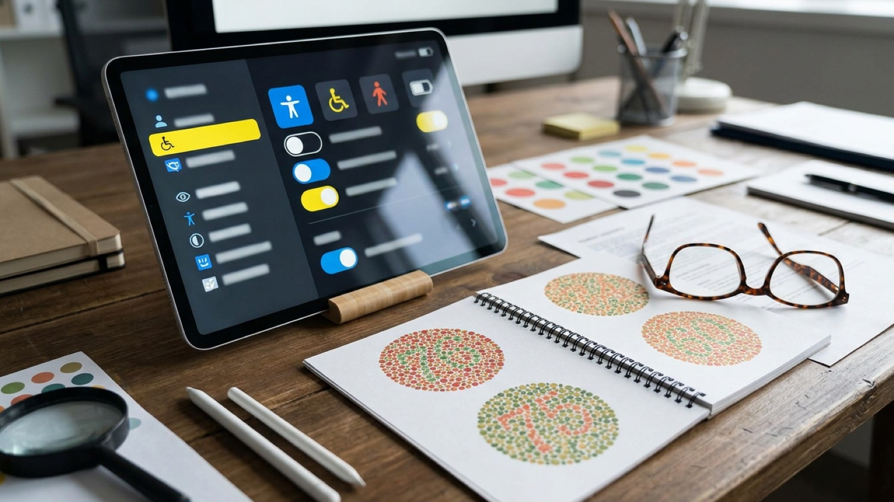
Kontrastverhältnis nach WCAG
Die Web Content Accessibility Guidelines (WCAG 2.2) messen den Helligkeitskontrast zwischen Vorder- und Hintergrund als Verhältnis von 1 : 1 (kein Kontrast) bis 21 : 1 (Schwarz auf Weiß). Der Farbton spielt dabei keine Rolle, nur die relative Leuchtdichte.
| Element | Stufe AA | Stufe AAA |
|---|---|---|
| Fließtext | mind. 4,5 : 1 | mind. 7 : 1 |
| Große Schrift (ab 24 px oder 18,66 px fett) | mind. 3 : 1 | mind. 4,5 : 1 |
| Bedienelemente, Icons, Diagrammlinien | mind. 3 : 1 | – |
Grautöne auf Weiß. Ab #767676 ist normaler Text nach AA erlaubt.
Selbst ausprobieren: das Kontrast-Labor
Stellen Sie Textfarbe, Hintergrund und Akzentfarbe selbst ein. Das Labor misst jede Kombination nach WCAG 2.2 und zeigt sofort, welche Anforderungen erfüllt sind.
Farbe nie als einziges Merkmal
WCAG-Kriterium 1.4.1 verlangt: Information darf nicht allein über Farbe vermittelt werden. Ein rot markiertes Pflichtfeld braucht zusätzlich ein Sternchen oder einen Text, ein Diagramm zusätzlich Beschriftungen oder Muster, ein Link im Fließtext zusätzlich eine Unterstreichung.
Wer Rot und Grün nicht unterscheidet, erkennt nicht, welches Feld fehlerhaft ist.
Der Fehler ist auch ohne Farbsehen eindeutig.
Formen der Farbsehschwäche
| Form | Betroffen | Auswirkung | Häufigkeit (Männer, Europa) |
|---|---|---|---|
| Deuteranomalie / Deuteranopie | M-Zapfen (Grün) | Rot und Grün schwer unterscheidbar | ca. 6 % |
| Protanomalie / Protanopie | L-Zapfen (Rot) | Rot–Grün-Verwechslung, Rot wirkt dunkler | ca. 2 % |
| Tritanopie | S-Zapfen (Blau) | Blau–Gelb-Verwechslung | unter 0,01 % |
| Achromatopsie | alle Zapfen | nur Helligkeit, keine Farbe | ca. 0,003 % |
Die Endung -anomalie bezeichnet eine Schwäche, -anopie den vollständigen Ausfall eines Zapfentyps. Werkzeuge wie die Entwicklertools von Chrome und Firefox, Figma-Plugins oder die Bildschirmfilter von macOS und Windows simulieren diese Sehweisen.
Checkliste
- Text erreicht mindestens 4,5 : 1, große Schrift und Bedienelemente 3 : 1.
- Keine Information steckt allein in der Farbe.
- Links sind auch ohne Farbe erkennbar, etwa unterstrichen.
- Diagramme funktionieren mit Beschriftung, Muster oder Form auch in Graustufen.
- Rot-Grün-Kombinationen als einziges Unterscheidungsmerkmal sind vermieden.
- Hell- und Dunkelmodus sind beide geprüft.
Üben: In Übung 5 messen Sie Kontraste und sehen eine Oberfläche durch die Augen von Menschen mit Farbsehschwäche.
Farbmischer
Mischen Sie eine vorgegebene Zielfarbe nach, einmal mit Licht (RGB) und einmal mit Druckfarben (CMY). So bekommen Sie ein Gefühl dafür, wie die Kanäle zusammenwirken.
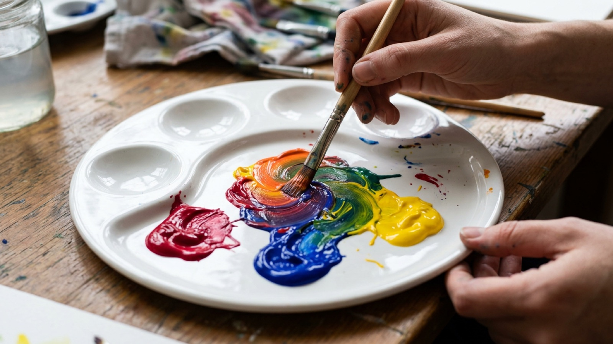
Stellen Sie die Regler so ein, dass Ihre Farbe der Zielfarbe möglichst nahekommt. Der Farbabstand ΔE zeigt, wie weit Sie entfernt sind: Unter 10 ist sehr nah, unter 3 kaum noch zu unterscheiden. Treffen Sie drei Zielfarben mit ΔE unter 10, davon mindestens eine im CMY-Modus.
Welcher Modus fiel Ihnen leichter? Beschreiben Sie, was passiert, wenn Sie im RGB-Modus alle Regler gleichzeitig erhöhen, und im CMY-Modus.
Farbcodes lesen
Profis erkennen an einem HEX- oder HSL-Wert ungefähr, welche Farbe gemeint ist, ohne sie zu sehen. Das hilft beim Lesen von Styleguides und CSS. Zehn Codes, zehn Beschreibungen.
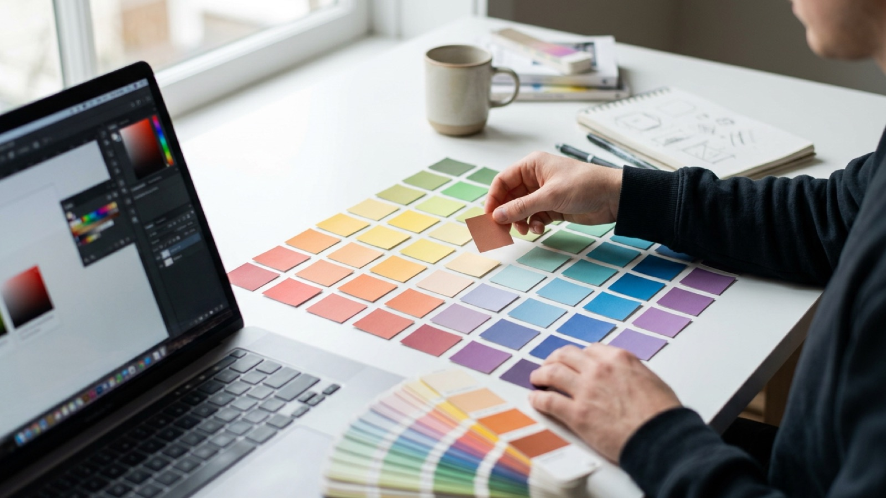
Wählen Sie die Beschreibung, die zum Farbcode passt. Erst nach der Antwort sehen Sie die Farbe. Ab 7 richtigen Antworten gilt die Übung als bestanden.
Spickzettel einblenden
- HEX: Das größte Ziffernpaar bestimmt den Farbton. Hohe Werte in allen drei Paaren bedeuten hell, niedrige dunkel. Drei ähnliche Paare ergeben Grau.
- HSL: H 0 Rot, 30 Orange, 60 Gelb, 120 Grün, 180 Cyan, 240 Blau, 300 Magenta. S unter 20 % wirkt grau. L unter 30 % dunkel, über 75 % hell.
Kontraste erkennen
Erst erleben Sie, wie stark das Umfeld eine Farbe verändert. Dann ordnen Sie sieben Beispiele den Farbkontrasten nach Itten zu.
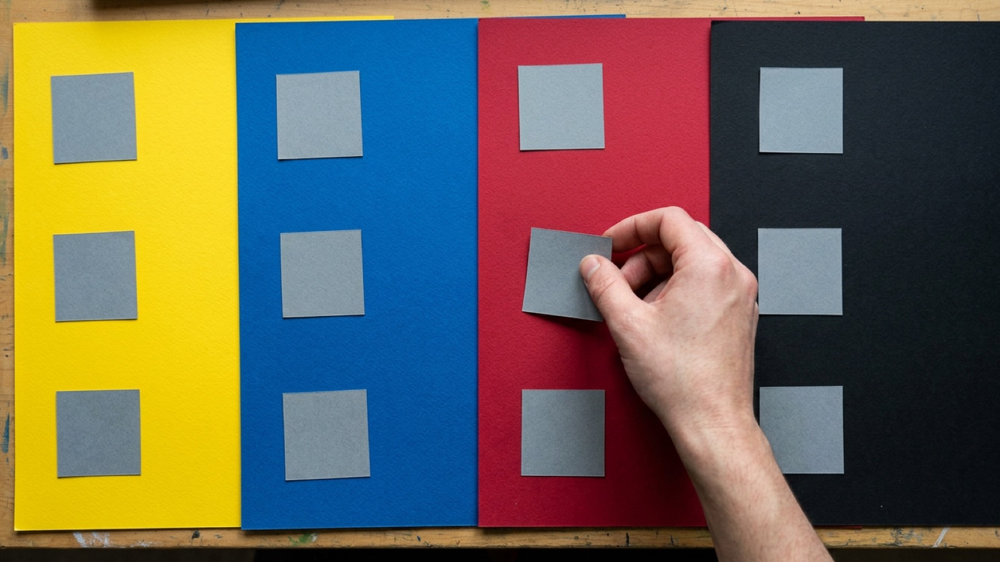
Die beiden kleinen Quadrate haben exakt denselben Farbwert. Wirken sie gleich? Verbinden Sie die Quadrate mit einem Steg oder entfernen Sie das Umfeld, um es zu überprüfen.
Welcher Kontrast prägt das jeweilige Beispiel am stärksten? Wählen Sie für jedes Beispiel einen Kontrast und prüfen Sie dann. Ab 5 von 7 richtigen Zuordnungen gilt die Übung als bestanden.
Harmonie-Farbkreis
Wählen Sie einen Grundton und eine Harmonieregel. Der Farbkreis zeigt die Beziehung, das Plakat daneben die Wirkung. Danach verfeinern Sie Helligkeit und Sättigung.
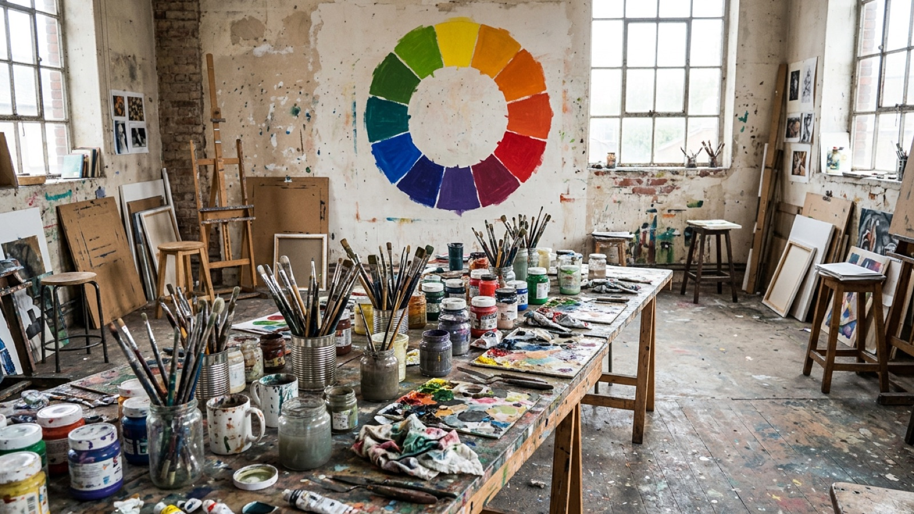
Gestalten Sie ein Plakat für das Sommerfest der Hochschule. Probieren Sie mindestens drei Harmonieregeln aus und entscheiden Sie sich für eine. Achten Sie darauf, dass der Titel gut lesbar bleibt: Der Kontrastwert unter dem Plakat hilft dabei.
Welche Regel passt am besten zum Thema, und warum? Wie verändert sich die Wirkung, wenn Sie nur die Sättigung senken?
Kontrast-Check und Farbsehschwäche
Messen Sie Kontraste wie ein Prüfwerkzeug, reparieren Sie zu schwache Farbkombinationen und sehen Sie eine Oberfläche so, wie Menschen mit Farbsehschwäche sie wahrnehmen.
Wählen Sie Text- und Hintergrundfarbe. Das Werkzeug berechnet das Kontrastverhältnis nach WCAG.
Diese vier Kombinationen fallen durch. Verändern Sie nur die Helligkeit der Textfarbe, bis jede mindestens AA erreicht (4,5 : 1). Der Farbton bleibt erhalten.
Schalten Sie die Simulation um. Welche Informationen gehen verloren? Aktivieren Sie dann „Zusätzliche Merkmale“ und vergleichen Sie.
Simulation nach Machado, Oliveira & Fernandes (2009), vollständiger Ausfall. Sie ist eine Annäherung, das individuelle Farbsehen ist sehr verschieden.
Palette bauen
Entwickeln Sie eine Farbpalette für eine App: mit Rollen, einer Hell- und einer Dunkelvariante und automatischer Kontrastprüfung. Am Ende exportieren Sie Ihre Palette als CSS-Variablen.
Gestalten Sie die Palette für die App „Mensa heute“. Alle Prüfungen rechts sollen bestanden sein, im hellen und im dunklen Modus.
Prüfungen
Export als CSS-Variablen
Wissenstest
Fünfzehn Fragen quer durch das Modul. Nach jeder Frage erhalten Sie eine kurze Erklärung.
Literatur und Quellen
Grundlagenwerke und Standards zu Farbe, chronologisch geordnet. Zur Vertiefung und für Hausarbeiten.
Stichwortverzeichnis
Alle Fachbegriffe des Moduls, kurz erklärt und mit Verweis auf das passende Kapitel.